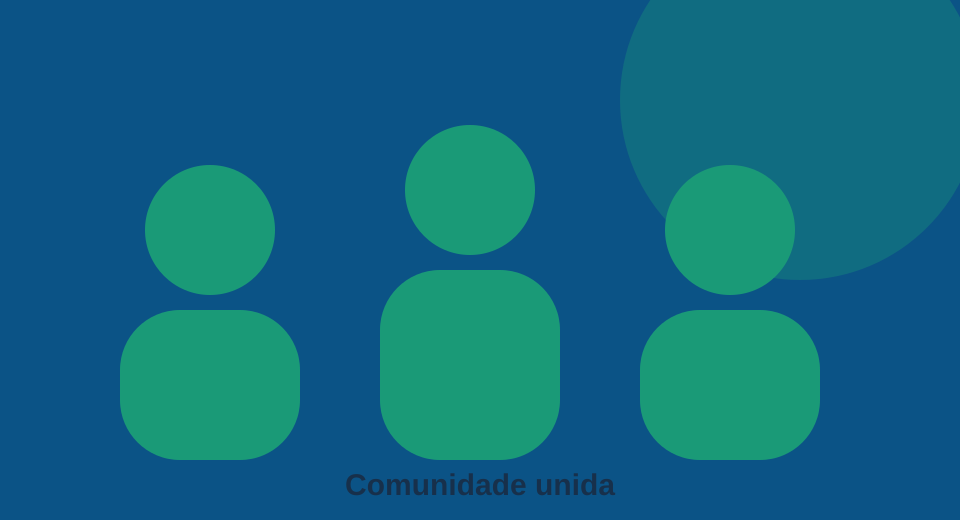

Juntos por uma sociedade mais solidária
Educação, inclusão e oportunidades para transformar vidas.
Conheça nossos projetosQuem somos

A ONG Transformando Vidas é uma organização fictícia criada para demonstrar uma plataforma acessível de iniciativas sociais.
Nossa missão
Promover inclusão, solidariedade e acesso a oportunidades por meio de ações comunitárias.
Entre em contato
E-mail demonstrativo: contato@example.org
Para participar, acesse a página de cadastro.